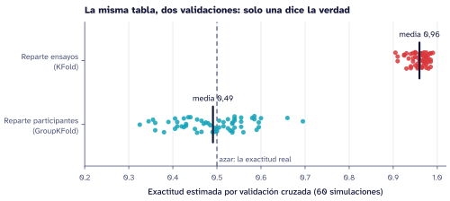

Validación cruzada por participante
El problema
En biomecánica y en bioseñales cada participante suele aportar varias mediciones: cinco marchas, diez contracciones, varios minutos de ECG. Esas mediciones se parecen mucho entre sí porque vienen de la misma persona. Si la validación cruzada reparte mediciones al azar entre entrenamiento y prueba, el modelo ve en el entrenamiento a las mismas personas que luego evalúa, y aprende a reconocerlas en lugar de aprender la clase. Es una forma de fuga de información (Kapoor y Narayanan 2023).
Un experimento que lo muestra
Con datos simulados en los que las variables no tienen ninguna relación con la clase, la exactitud real de cualquier clasificador es 0,5. Cada uno de los 40 participantes simulados tiene cinco ensayos muy parecidos entre sí, y la clase se asigna al azar por participante.

Repartiendo ensayos (KFold), la validación estima una exactitud media de 0,96. Repartiendo participantes (GroupKFold), de 0,49: lo que de verdad hay.
La solución: grupos
En scikit-learn basta con decirle a la validación cuál es la unidad de análisis:
from sklearn.model_selection import GroupKFold, cross_val_score
puntajes = cross_val_score(modelo, X, y,
groups=participante, # un identificador por fila
cv=GroupKFold(n_splits=5))Con GroupKFold, todos los ensayos de una persona quedan juntos, en entrenamiento o en prueba, nunca en los dos. Si las clases están desbalanceadas, StratifiedGroupKFold además conserva la proporción de cada clase en cada partición.
Lista de revisión
- ¿Cuál es la unidad de análisis: el participante, la sesión o el ensayo?
- ¿Algún paso aprende de los datos antes de la validación (escalado, imputación, selección de variables)? Si es así, va dentro del
Pipeline, para que se ajuste solo con el entrenamiento. - ¿El conjunto de prueba final tiene participantes que el modelo nunca vio?
Código completo
"""Figura del tutorial «Validación cruzada por participante»: la fuga de información.
Datos simulados SIN relación entre las variables y la clase (la exactitud real es 0,5).
Cada participante tiene 5 ensayos muy parecidos entre sí. Se compara la validación cruzada
que reparte ensayos (KFold) con la que reparte participantes (GroupKFold).
"""
import sys
from pathlib import Path
AQUI = Path(__file__).resolve().parent
RAIZ = next(p for p in AQUI.parents if (p / "_quarto.yml").exists())
sys.path[:0] = [str(RAIZ / "recursos/marca/python"), str(RAIZ / "recursos/python")]
import matplotlib.pyplot as plt
import numpy as np
from sklearn.model_selection import GroupKFold, KFold, cross_val_score
from sklearn.neighbors import KNeighborsClassifier
from sklearn.pipeline import make_pipeline
from sklearn.preprocessing import StandardScaler
import caicedo_mpl as cm
FIG = AQUI / "fig"
PARTICIPANTES, ENSAYOS, VARIABLES = 40, 5, 6
REPETICIONES = 60
def simular(rng):
"""Cada participante tiene una «firma» propia; la clase se asigna al azar por participante."""
firma = rng.normal(0, 1, (PARTICIPANTES, VARIABLES))
clase = rng.permutation(np.repeat([0, 1], PARTICIPANTES // 2))
X = np.repeat(firma, ENSAYOS, axis=0) + rng.normal(0, .3, (PARTICIPANTES * ENSAYOS, VARIABLES))
y = np.repeat(clase, ENSAYOS)
grupos = np.repeat(np.arange(PARTICIPANTES), ENSAYOS)
return X, y, grupos
def evaluar():
modelo = make_pipeline(StandardScaler(), KNeighborsClassifier(n_neighbors=1))
por_ensayo, por_participante = [], []
for r in range(REPETICIONES):
X, y, grupos = simular(np.random.default_rng(r))
por_ensayo.append(cross_val_score(modelo, X, y, cv=KFold(5, shuffle=True, random_state=r)).mean())
por_participante.append(cross_val_score(modelo, X, y, groups=grupos, cv=GroupKFold(5)).mean())
return np.array(por_ensayo), np.array(por_participante)
def figura(por_ensayo, por_participante):
cm.usar("documento")
fig, ax = plt.subplots(figsize=(7.2, 2.9))
rng = np.random.default_rng(0)
filas = [("Reparte participantes\n(GroupKFold)", por_participante, cm.T["dato"]),
("Reparte ensayos\n(KFold)", por_ensayo, cm.T["aviso"])]
for i, (nombre, valores, color) in enumerate(filas):
ax.scatter(valores, i + rng.uniform(-.13, .13, valores.size), s=26, color=color, alpha=.85, zorder=3)
ax.plot([valores.mean()] * 2, [i - .28, i + .28], color=cm.T["tinta"], lw=2.2, zorder=4)
ax.annotate(f"media {valores.mean():.2f}".replace(".", ","), (valores.mean(), i + .3), xytext=(0, 2),
textcoords="offset points", ha="center", va="bottom", fontsize=9)
ax.axvline(.5, color=cm.TENUE["claro"], lw=1.2, ls=(0, (4, 3)))
ax.text(.505, -.62, "azar: la exactitud real", fontsize=8.5, color=cm.TENUE["claro"], va="bottom")
ax.set_yticks([0, 1], [f[0] for f in filas]); ax.set_ylim(-.65, 1.6)
ax.set_xlim(.2, 1.02); ax.grid(axis="y", visible=False)
ax.set_xlabel(f"Exactitud estimada por validación cruzada ({REPETICIONES} simulaciones)")
ax.set_title("La misma tabla, dos validaciones: solo una dice la verdad")
cm.guardar(fig, FIG / "fuga"); plt.close(fig)
def main():
por_ensayo, por_participante = evaluar()
print(f"KFold: {por_ensayo.mean():.3f} GroupKFold: {por_participante.mean():.3f}")
figura(por_ensayo, por_participante)
if __name__ == "__main__":
main()